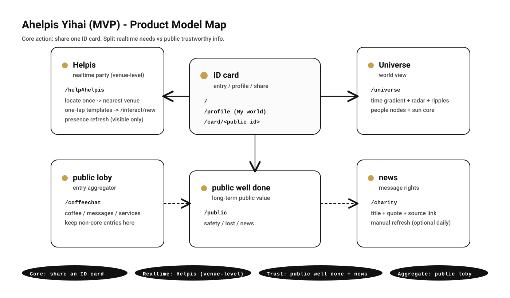
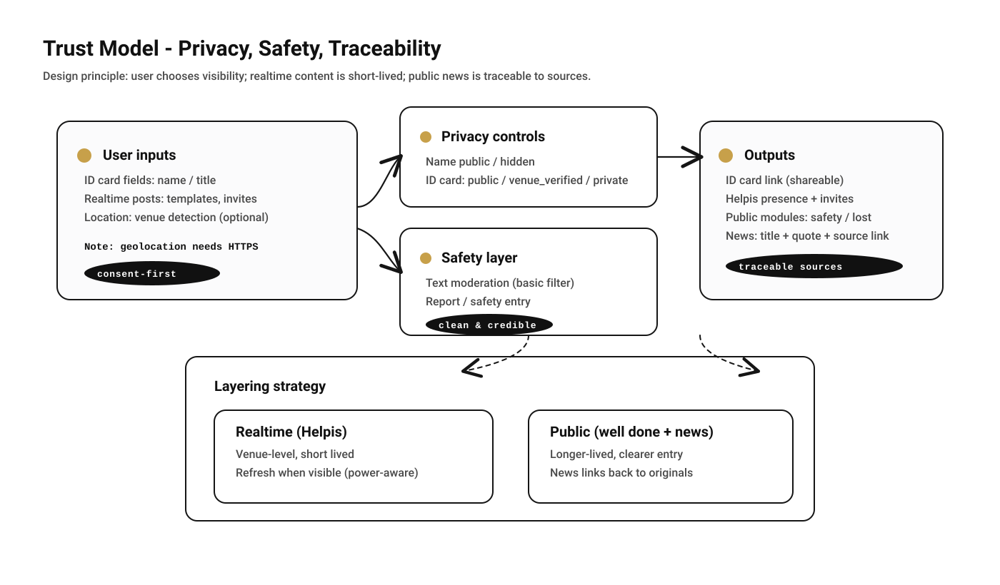
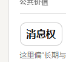

把社交尴尬变成“递出一张 ID card”的动作
ONE-LINER
一个“社交通行证（ID card）+ 场所级实时互动（Helpis / 实时party）+ 可追溯公共消息（news / 消息权）”的可运行原型，
用来把社交互动做得更自然、更可信、更即时。
对外演示时，可以按“30 秒上手”顺序直接操作。
27hours我们帮你多加了 3 小时
CONCEPT27hours：我们帮你多加了3个小时的生命——通过减少摩擦，让时间回到你自己手里。
不是把时间变长，而是把“浪费的摩擦”变少：少一点绕路、少一点被坑、少一点无效等待。
24h + 3h = 27h
把多出来的 3 小时，用在自己/别人/城市
核心动作：SEND 一张 ID card
Realtime：同场所即时需求
Public：可信入口 + 可追溯
What problem?解决什么问题
- 社交尴尬：第一次见面/想认识却没切入点，容易冷场。
- 实时需求：在某个地点当下需要“搭子/帮忙/信息”，但缺少即时的表达与匹配。
- 可信信息：公共信息需要可追溯来源，避免“搬运、断章、难核验”。
Demo links演示链接（填你的域名）
https://your-domain.com/
https://your-domain.com/help#helpis
https://your-domain.com/charity
手机定位需要 HTTPS（浏览器安全策略）。如果你现在只在局域网测试，定位可能会失败，这是预期行为。
产品模型（信息架构）

对外口径统一为 6 个入口：ID card / Helpis / public loby / public well done / Universe / news（消息权）。
30 秒上手（按真实页面顺序）
- 进门：打开 /（ID card）。
- getting：点 getting → 进入 /help#helpis（Helpis / 实时party）。
- My world：点 My world → 进入 /profile（个人中心）。这里能 OPEN 公开卡，SEND 分享/复制链接，并设置可见性。
- 识别此时 now：在 Helpis 里点“识别此时 now”，定位一次跳转最近场所；看“附近在线”实时刷新。
- 一键模板发需求：点 Need/Offer 模板，自动带好标题与正文跳转到 /interact/new 发布。
- news / 消息权：打开 /charity，像读报一样浏览：标题 + 引用摘要 + 原文链接（可追溯）。
可信与安全（隐私、过滤、可追溯）

三件事：用户自己决定公开/匿名；实时内容短时、能量友好；news 只展示“标题/摘要引用/原文链接”，可追溯来源。
模型图片（现状 UI 截图）

现状截图示例：news / 消息权入口（标题在上、中文在下）。
Why this split?为什么要这样分层
- ID card：把社交动作标准化，降低第一次互动门槛。
- Helpis：只做“此时此地”的需求与在线，短时、轻量、实时。
- Public + news：长期内容入口更明确，且强调可追溯与安全。
- public loby：把杂项入口收口，主线更干净。
落地方式（能真正被手机使用）
测试期（同 Wi‑Fi）
- 手机访问 http://局域网IP:8000/ 可看页面与分享链接。
- 定位通常会失败（不是 HTTPS）。这是浏览器策略，不是产品逻辑问题。
上线期（可定位、可分享、可加主屏幕）
- 准备 域名 + HTTPS（推荐 Caddy 自动证书）。
- 结构：Caddy(HTTPS) → uvicorn(127.0.0.1:8000)
- 备份：abang.sqlite3（+ uploads/ 如有）
附录：导出 PDF（发微信最稳）
推荐方式：用 Edge/Chrome 打开本文件，然后打印另存为 PDF。
- Windows：Ctrl + P → 目标打印机选“另存为 PDF” → 保存
- Mac：Cmd + P → PDF → 存储为 PDF
如果打印预览里出现空白页，通常是浏览器的分页计算问题；重开预览或改成“按 A4、边距默认”基本可解决。